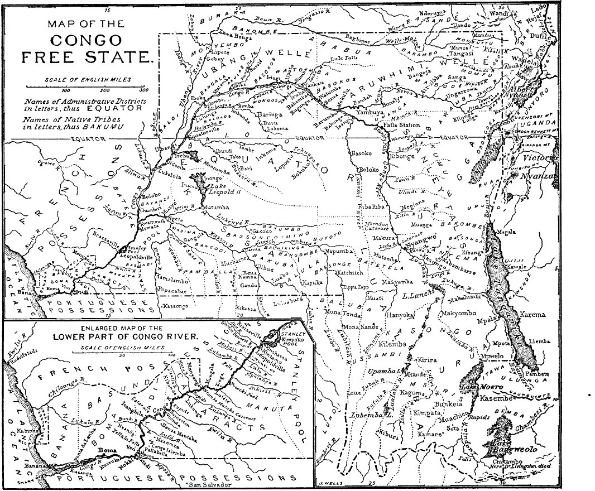
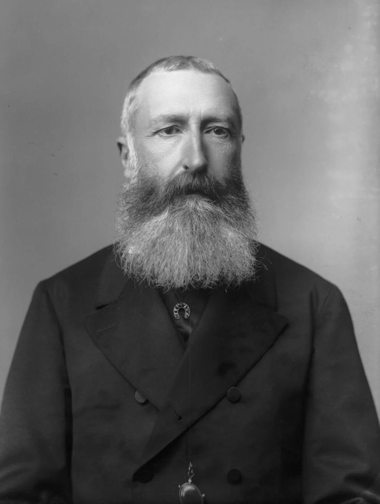

← 目次Leopold II became King of the Belgians in 1865. Belgium was a small and young country, and Leopold wanted more for it. He wanted a colony, and above all, he wanted one for himself.

Alexander Bassano（写真）, Leopold II, King of the Belgians, 1889／Public domain／Commons
In 1876, he invited explorers and geographers to his palace in Brussels. There he founded the International African Association. Its aims sounded noble: science, exploration, and the end of the slave trade. Few people saw the real plan behind these fine words.
Its aims sounded noble: science, exploration, and the end of the slave trade.
At that time, the great river of Central Africa was still a mystery to Europeans. Between 1874 and 1877, the explorer Henry Morton Stanley followed it all the way to the Atlantic. On European maps, the blank space began to fill up with a long, curving line: the Congo. Leopold hired Stanley, and from 1879 to 1884 Stanley worked in the Congo basin for him. He built stations along the river and a road around the rapids, and he made hundreds of local chiefs sign treaties that most of them could not read.
In November 1884, the German chancellor Otto von Bismarck called the European powers to a conference in Berlin. By the time it ended in 1885, the powers had accepted Leopold’s claim. A new state was born, and it was given a strange name: the Congo Free State.
A new state was born, and it was given a strange name: the Congo Free State.
The state was not a colony of Belgium. It belonged to Leopold himself, as a kind of private property. It was about 2.3 million square kilometres, many times larger than Belgium, and the king never once visited it. He ruled it from Brussels through companies, officials and soldiers. This is why Marlow’s company has its office in a city that “always makes me think of a whited sepulchre.”
Leopold said he would rule the Congo “for the good of all.” In the following years, however, the search for ivory and rubber brought terrible cruelty to its people. After a long international campaign, Belgium took the territory from the king in November 1908. Conrad went there in 1890, near the beginning of this story, and he saw enough to write a book about it.
英文と訳は本教材の自作です。年や数は上の資料で確かめました。